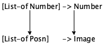

III Abstraction
Many of our data definitions and function definitions look alike. For example, the definition for a list of Strings differs from that of a list of Numbers in only two places: the names of the classes of data and the words “String” and “Number.” Similarly, a function that looks for a specific string in a list of Strings is nearly indistinguishable from one that looks for a specific number in a list of Numbers.
Experience shows that these kinds of similarities are problematic. The
similarities come about because programmers—
Good programmers try to eliminate similarities as much as the programming language allows.A program is like an essay. The first version is a draft, and drafts demand editing. “Eliminate” implies that programmers write down their first drafts of programs, spot similarities (and other problems), and get rid of them. For the last step, they either abstract or use existing (abstract) functions. It often takes several iterations of this process to get the program into satisfactory shape.
The first half of this part shows how to abstract over similarities in functions and data definitions. Programmers also refer to the result of this process as an abstraction, conflating the name of the process and its result. The second half is about the use of existing abstractions and new language elements to facilitate this process. While the examples in this part are taken from the realm of lists, the ideas are universally applicable.
14 Similarities Everywhere
If you solved (some of) the exercises in Arbitrarily Large Data, you know that many solutions look alike. As a matter of fact, the similarities may tempt you to copy the solution of one problem to create the solution for the next. But thou shall not steal code, not even your own. Instead, you must abstract over similar pieces of code and this chapter teaches you how to abstract.
Our means of avoiding similarities are specific to “Intermediate Student Language” or ISL for short.In DrRacket, choose “Intermediate Student” from the “How to Design Programs” submenu in the “Language” menu. Almost all other programming languages provide similar means; in object-oriented languages you may find additional abstraction mechanisms. Regardless, these mechanisms share the basic characteristics spelled out in this chapter, and thus the design ideas explained here apply in other contexts, too.
14.1 Similarities in Functions
The design recipe determines a function’s basic organization because the template is created from the data definition without regard to the purpose of the function. Not surprisingly, then, functions that consume the same kind of data look alike.
; Los -> Boolean ; does l contain "dog" (define (contains-dog? l) (cond [(empty? l) #false] [else (or (string=? (first l) "dog") (contains-dog? (rest l)))]))
; Los -> Boolean ; does l contain "cat" (define (contains-cat? l) (cond [(empty? l) #false] [else (or (string=? (first l) "cat") (contains-cat? (rest l)))]))
; String Los -> Boolean ; determines whether l contains the string s (define (contains? s l) (cond [(empty? l) #false] [else (or (string=? (first l) s) (contains? s (rest l)))]))
; Los -> Boolean ; does l contain "dog" (define (contains-dog? l) (contains? "dog" l))
; Los -> Boolean ; does l contain "cat" (define (contains-cat? l) (contains? "cat" l))
What you haveComputer scientists borrow the term “abstract” from mathematics. There, “6” is an abstract concept because it represents all ways of enumerating six things. In contrast, “6 inches” or “6 eggs” are concrete uses. just witnessed is called abstraction or, more precisely, functional abstraction. Abstracting different versions of functions is one way to eliminate similarities from programs, and as you will see, removing similarities simplifies keeping a program intact over a long period.
Exercise 235. Use the contains? function to define functions that search for "atom", "basic", and "zoo", respectively.
; Lon -> Lon ; adds 1 to each item on l (define (add1* l) (cond [(empty? l) '()] [else (cons (add1 (first l)) (add1* (rest l)))]))
; Lon -> Lon ; adds 5 to each item on l (define (plus5 l) (cond [(empty? l) '()] [else (cons (+ (first l) 5) (plus5 (rest l)))]))
14.2 Different Similarities
Abstraction looks easy in the case of the contains-dog? and contains-cat? functions. It takes only a comparison of two function definitions, a replacement of a literal string with a function parameter, and a quick check that it is easy to define the old functions with the abstract function. This kind of abstraction is so natural that it showed up in the preceding two parts of the book without much ado.
This section illustrates how the very same principle yields a powerful form of abstraction. Take a look at figure 88. Both functions consume a list of numbers and a threshold. The left one produces a list of all those numbers that are below the threshold, while the one on the right produces all those that are above the threshold.
; Lon Number -> Lon ; select those numbers on l ; that are below t (define (small l t) (cond [(empty? l) '()] [else (cond [(< (first l) t) (cons (first l) (small (rest l) t))] [else (small (rest l) t)])]))
; Lon Number -> Lon ; select those numbers on l ; that are above t (define (large l t) (cond [(empty? l) '()] [else (cond [(> (first l) t) (cons (first l) (large (rest l) t))] [else (large (rest l) t)])]))
The two functions differ in only one place: the comparison operator that determines whether a number from the given list should be a part of the result or not. The function on the left uses <, and the right one >. Other than that, the two functions look identical, not counting the function name.
Let’s follow the first example and abstract over the two functions with an additional parameter. This time the additional parameter represents a comparison operator rather than a string:
(define (extract R l t) (cond [(empty? l) '()] [else (cond [(R (first l) t) (cons (first l) (extract R (rest l) t))] [else (extract R (rest l) t)])]))
Stop! At this point you should ask whether this definition makes any
sense. Without further fuss, we have created a function that consumes a
function—
(check-expect (extract < '() 5) (small '() 5)) (check-expect (extract < '(3) 5) (small '(3) 5)) (check-expect (extract < '(1 6 4) 5) (small '(1 6 4) 5))
; Lon Number -> Lon (define (small-1 l t) (extract < l t))
; Lon Number -> Lon (define (large-1 l t) (extract > l t))
; Number Number -> Boolean ; is the area of a square with side x larger than c (define (squared>? x c) (> (* x x) c))
(extract squared>? (list 3 4 5) 10)
Exercise 237. Evaluate (squared>? 3 10) and (squared>? 4 10) in DrRacket. How about (squared>? 5 10)?
So far you have seen that abstracted function definitions can be more useful than the original functions. For example, contains? is more useful than contains-dog? and contains-cat?, and extract is more useful than small and large.These benefits of abstraction are available at all levels of programming: word documents, spreadsheets, small apps, and large industrial projects. Creating abstractions for the latter drives research on programming languages and software engineering. Another important aspect of abstraction is that you now have a single point of control over all these functions. If it turns out that the abstract function contains a mistake, fixing its definition suffices to fix all other definitions. Similarly, if you figure out how to accelerate the computations of the abstract function or how to reduce its energy consumption, then all functions defined in terms of this function are improved without any extra effort. The following exercises indicate how these single-point-of-control improvements work.
; Nelon -> Number ; determines the smallest ; number on l (define (inf l) (cond [(empty? (rest l)) (first l)] [else (if (< (first l) (inf (rest l))) (first l) (inf (rest l)))]))
; Nelon -> Number ; determines the largest ; number on l (define (sup l) (cond [(empty? (rest l)) (first l)] [else (if (> (first l) (sup (rest l))) (first l) (sup (rest l)))]))
Exercise 238. Abstract the two functions in figure 89 into a single function. Both consume non-empty lists of numbers (Nelon) and produce a single number. The left one produces the smallest number in the list, and the right one the largest.
(list 25 24 23 22 21 20 19 18 17 16 15 14 13 12 11 10 9 8 7 6 5 4 3 2 1) (list 1 2 3 4 5 6 7 8 9 10 11 12 13 14 15 16 17 18 19 20 21 22 23 24 25)
Modify the original functions with the use of max, which picks the larger of two numbers, and min, which picks the smaller one. Then abstract again, define inf-2 and sup-2, and test them with the same inputs again. Why are these versions so much faster?
For another answer to these questions, see Local Definitions.
14.3 Similarities in Data Definitions
; An Lon (List-of-numbers) ; is one of: ; – '() ; – (cons Number Lon)
; An Los (List-of-String) ; is one of: ; – '() ; – (cons String Los)
When we write [List-of Number], we are saying that ITEM represents all numbers so it is just another name for List-of-numbers;
Similarly, [List-of String] defines the same class of data as List-of-String; and
- If we had identified a class of inventory records, like this:
(define-struct ir [name price]) ; An IR is a structure: ; (make-ir String Number)
(define-struct point [hori veri])
; A Pair-boolean-string is a structure: ; (make-point Boolean String) ; A Pair-number-image is a structure: ; (make-point Number Image)
To instantiate a data definition with two parameters, you need two names of data collections. Using Number and Image for the parameters of CP, you get [CP Number Image], which describes the collections of points that combine a number with an image. In contrast [CP Boolean String] combines Boolean values with strings in a point structure.
; An LStr is one of: ; – String ; – (make-layer LStr)
; An LNum is one of: ; – Number ; – (make-layer LNum)
(define-struct layer [stuff])
Exercise 241. Compare the definitions for NEList-of-temperatures and NEList-of-Booleans. Then formulate an abstract data definition NEList-of.
; String [List-of String] -> [Maybe [List-of String]] ; returns the remainder of los starting with s ; #false otherwise (check-expect (occurs "a" (list "b" "a" "d" "e")) (list "d" "e")) (check-expect (occurs "a" (list "b" "c" "d")) #f) (define (occurs s los) los)
14.4 Functions Are Values
The functions in this part stretch our understanding of program evaluation. It is easy to understand how functions consume more than numbers, say strings or images. Structures and lists are a bit of a stretch, but they are finite “things” in the end. Function-consuming functions, however, are strange. Indeed, the very idea violates the first intermezzo in two ways: (1) the names of primitives and functions are used as arguments in applications, and (2) parameters are used in the function position of applications.
Spelling out the problem tells you how the ISL grammar differs from BSL’s. First, our expression language should include the names of functions and primitive operations in the definition. Second, the first position in an application should allow things other than function names and primitive operations; at a minimum, it must allow variables and function parameters.
The changes to the grammar seem to demand changes to the evaluation rules, but all that changes is the set of values. Specifically, to accommodate functions as arguments of functions, the simplest change is to say that functions and primitive operations are values.
(define (f x) x)
Exercise 245. Develop the function=at-1.2-3-and-5.775? function. Given two functions from numbers to numbers, the function determines whether the two produce the same results for 1.2, 3, and -5.775.
Mathematicians say that two functions are equal if they compute the same
result when given the same input—
Can we hope to define function=?, which determines whether two functions from numbers to numbers are equal? If so, define the function. If not, explain why and consider the implication that you have encountered the first easily definable idea for which you cannot define a function.
14.5 Computing with Functions
The switch from BSL+ to ISL allows the use of functions as arguments and the use of names in the first position of an application. DrRacket deals with names in these positions like anywhere else, but naturally, it expects a function as a result. Surprisingly, a simple adaptation of the laws of algebra suffices to evaluate programs in ISL.
(extract < '() 5) == '()
== (cond [(empty? '()) '()] [else (cond [(< (first '()) t) (cons (first '()) (extract < (rest '()) 5))] [else (extract < (rest '()) 5)])]) == (cond [#true '()] [else (cond [(< (first '()) t) (cons (first '()) (extract < (rest '()) 5))] [else (extract < (rest '()) 5)])]) == '()
(extract < (cons 4 '()) 5) == (cond [(empty? (cons 4 '())) '()] [else (cond [(< (first (cons 4 '())) 5) (cons (first (cons 4 '())) (extract < (rest (cons 4 '())) 5))] [else (extract < (rest (cons 4 '())) 5)])])
(cond [(empty? (cons 4 '())) '()] [else (cond [(< (first (cons 4 '())) 5) (cons (first (cons 4 '())) (extract < (rest (cons 4 '())) 5))] [else (extract < (rest (cons 4 '())) 5)])]) == (cond [#false '()] [else (cond [(< (first (cons 4 '())) 5) (cons (first (cons 4 '())) (extract < (rest (cons 4 '())) 5))] [else (extract < (rest (cons 4 '())) 5)])]) == (cond [(< (first (cons 4 '())) 5) (cons (first (cons 4 '())) (extract < (rest (cons 4 '())) 5))] [else (extract < (rest (cons 4 '())) 5)]) == (cond [(< 4 5) (cons (first (cons 4 '())) (extract < (rest (cons 4 '())) 5))] [else (extract < (rest (cons 4 '())) 5)])
== (cond [#true (cons (first (cons 4 '())) (extract < (rest (cons 4 '())) 5))] [else (extract < (rest (cons 4 '())) 5)]) == (cons 4 (extract < (rest (cons 4 '())) 5)) == (cons 4 (extract < '() 5)) == (cons 4 '())
(extract < (cons 6 (cons 4 '())) 5) == (extract < (cons 4 '()) 5) == (cons 4 (extract < '() 5)) == (cons 4 '())
Exercise 247. Evaluate (extract < (cons 8 (cons 4 '())) 5) with DrRacket’s stepper.
Exercise 248. Evaluate (squared>? 3 10) and (squared>? 4 10) in DrRacket’s stepper.
> (extract squared>? (list 3 4 5) 10) (list 4 5)
(extract squared>? (list 3 4 5) 10)
(1)
== (cond [(empty? (list 3 4 5)) '()] [else (cond [(squared>? (first (list 3 4 5)) 10) (cons (first (list 3 4 5)) (extract squared>? (rest (list 3 4 5)) 10))] [else (extract squared>? (rest (list 3 4 5)) 10)])])
(2)
== ... == (cond [(squared>? 3 10) (cons (first (list 3 4 5)) (extract squared>? (rest (list 3 4 5)) 10))] [else (extract squared>? (rest (list 3 4 5)) 10)])
(3)
15 Designing Abstractions
In essence, to abstract is to turn something concrete into a parameter. We have this several times in the preceding section. To abstract similar function definitions, you add parameters that replace concrete values in the definition. To abstract similar data definitions, you create parametric data definitions. When you encounter other programming languages, you will see that their abstraction mechanisms also require the introduction of parameters, though they may not be function parameters.
15.1 Abstractions from Examples
When you first learned to add, you worked with concrete examples. Your parents probably taught you to use your fingers to add two small numbers. Later on, you studied how to add two arbitrary numbers; you were introduced to your first kind of abstraction. Much later still, you learned to formulate expressions that convert temperatures from Celsius to Fahrenheit or calculate the distance that a car travels at a given speed and amount of time. In short, you went from very concrete examples to abstract relations.
; List-of-numbers -> List-of-numbers ; converts a list of Celsius ; temperatures to Fahrenheit (define (cf* l) (cond [(empty? l) '()] [else (cons (C2F (first l)) (cf* (rest l)))]))
; Inventory -> List-of-strings ; extracts the names of ; toys from an inventory (define (names i) (cond [(empty? i) '()] [else (cons (IR-name (first i)) (names (rest i)))]))
; Number -> Number ; converts one Celsius ; temperature to Fahrenheit (define (C2F c) (+ (* 9/5 c) 32))
(define-struct IR [name price]) ; An IR is a structure: ; (make-IR String Number) ; An Inventory is one of: ; – '() ; – (cons IR Inventory)
(define (cf* l g) (cond [(empty? l) '()] [else (cons (g (first l)) (cf* (rest l) g))]))
(define (names i g) (cond [(empty? i) '()] [else (cons (g (first i)) (names (rest i) g))]))
(define (map1 k g) (cond [(empty? k) '()] [else (cons (g (first k)) (map1 (rest k) g))]))
(define (map1 k g) (cond [(empty? k) '()] [else (cons (g (first k)) (map1 (rest k) g))]))
This section introduces a design recipe for creating abstractions from examples. As the preceding section shows, creating abstractions is easy. We leave the difficult part to the next section where we show you how to find and use existing abstractions.
Step 1 is to compare two items for similarities.
When you find two function definitions that are almost the same except for their names and some valuesThe recipe requires a substantial modification for abstracting over non-values. at analogous places, compare them and mark the differences. If the two definitions differ in more than one place, connect the corresponding differences with a line.
Figure 90 shows a pair of similar function definitions. The two functions apply a function to each item in a list. They differ only as to which function they apply to each item. The two highlights emphasize this essential difference. They also differ in two inessential ways: the names of the functions and the names of the parameters.
Next we abstract. To abstract means to replace the contents of corresponding code highlights with new names and add these names to the parameter list. For our running example, we obtain the following pair of functions after replacing the differences with g; see figure 91. This first change eliminates the essential difference. Now each function traverses a list and applies some given function to each item.
The inessential differences—
the names of the functions and occasionally the names of some parameters— are easy to eliminate. Indeed, if you have explored DrRacket, you know that check syntax allows you to do this systematically and easily; see bottom of figure 91. We choose to use map1 for the name of the function and k for the name of the list parameter. No matter which names you choose, the result is two identical function definitions. Our example is simple. In many cases, you will find that there is more than just one pair of differences. The key is to find pairs of differences. When you mark up the differences with paper and pencil, connect related boxes with a line. Then introduce one additional parameter per line. And don’t forget to change all recursive uses of the function so that the additional parameters go along for the ride.
Now we must validate that the new function is a correct abstraction of the original pair of functions. To validate means to test, which here means to define the two original functions in terms of the abstraction.
Thus suppose that one original function is called f-original and consumes one argument and that the abstract function is called abstract. If f-original differs from the other concrete function in the use of one value, say, val, the following function definition(define (f-from-abstract x) (abstract x val)) introduces the function f-from-abstract, which should be equivalent to f-original. That is, (f-from-abstract V) should produce the same answer as (f-original V) for every proper value V. In particular, it must hold for all values that your tests for f-original use. So reformulate and rerun those tests for f-from-abstract and make sure they succeed.; List-of-numbers -> List-of-numbers (define (cf*-from-map1 l) (map1 l C2F)) ; Inventory -> List-of-strings (define (names-from-map1 i) (map1 i IR-name)) A complete example would include some tests, and thus we can assume that both cf* and names come with some tests:(check-expect (cf* (list 100 0 -40)) (list 212 32 -40)) (check-expect (names (list (make-IR "doll" 21.0) (make-IR "bear" 13.0))) (list "doll" "bear")) To ensure that the functions defined in terms of map1 work properly, you can copy the tests and change the function names appropriately:(check-expect (cf*-from-map1 (list 100 0 -40)) (list 212 32 -40)) (check-expect (names-from-map1 (list (make-IR "doll" 21.0) (make-IR "bear" 13.0))) (list "doll" "bear")) A new abstraction needs a signature, because, as Using Abstractions explains, the reuse of abstractions starts with their signatures. Finding useful signatures is a serious problem. For now we use the running example to illustrate the difficulty; Similarities in Signatures resolves the issue.
Consider the problem of map1’s signature. On the one hand, if you view map1 as an abstraction of cf*, you might think it is; List-of-numbers [Number -> Number] -> List-of-numbers
that is, the original signature extended with one part for functions:Since the additional parameter for map1 is a function, the use of a function signature to describe it should not surprise you. This function signature is also quite simple; it is a “name” for all the functions from numbers to numbers. Here C2F is such a function, and so are add1, sin, and imag-part.On the other hand, if you view map1 as an abstraction of names, the signature is quite different:; Inventory [IR -> String] -> List-of-strings
This time the additional parameter is IR-name, which is a selector function that consumes IRs and produces Strings. But clearly this second signature would be useless in the first case, and vice versa. To accommodate both cases, the signature for map1 must express that Number, IR, and String are coincidental.Also concerning signatures, you are probably eager to use List-of by now. It is clearly easier to write [List-of IR] than spelling out a data definition for Inventory. So yes, as of now, we use List-of when it is all about lists, and you should too.
; List-of-numbers -> List-of-numbers (define (add1-to-each l) (map1 l add1))
; Number -> [List-of Number] ; tabulates sin between n ; and 0 (incl.) in a list (define (tab-sin n) (cond [(= n 0) (list (sin 0))] [else (cons (sin n) (tab-sin (sub1 n)))]))
; Number -> [List-of Number] ; tabulates sqrt between n ; and 0 (incl.) in a list (define (tab-sqrt n) (cond [(= n 0) (list (sqrt 0))] [else (cons (sqrt n) (tab-sqrt (sub1 n)))])) Figure 92: The similar functions for exercise 250
; [List-of Number] -> Number ; computes the sum of ; the numbers on l (define (sum l) (cond [(empty? l) 0] [else (+ (first l) (sum (rest l)))]))
; [List-of Number] -> Number ; computes the product of ; the numbers on l (define (product l) (cond [(empty? l) 1] [else (* (first l) (product (rest l)))])) Figure 93: The similar functions for exercise 251
Exercise 250. Design tabulate, which is the abstraction of the two functions in figure 92. When tabulate is properly designed, use it to define a tabulation function for sqr and tan.
Exercise 251. Design fold1, which is the abstraction of the two functions in figure 93.
Exercise 252. Design fold2, which is the abstraction of the two functions in figure 94. Compare this exercise with exercise 251. Even though both involve the product function, this exercise poses an additional challenge because the second function, image*, consumes a list of Posns and produces an Image. Still, the solution is within reach of the material in this section, and it is especially worth comparing the solution with the one to the preceding exercise. The comparison yields interesting insights into abstract signatures.
; [List-of Number] -> Number (define (product l) (cond [(empty? l) 1] [else (* (first l) (product (rest l)))]))
; [List-of Posn] -> Image (define (image* l) (cond [(empty? l) emt] [else (place-dot (first l) (image* (rest l)))])) ; Posn Image -> Image (define (place-dot p img) (place-image dot (posn-x p) (posn-y p) img)) ; graphical constants: (define emt (empty-scene 100 100)) (define dot (circle 3 "solid" "red")) Figure 94: The similar functions for exercise 252
Lastly, when you are dealing with data definitions, the abstraction process proceeds in an analogous manner. The extra parameters to data definitions stand for collections of values, and testing means spelling out a data definition for some concrete examples. All in all, abstracting over data definitions tends to be easier than abstracting over functions, and so we leave it to you to adapt the design recipe appropriately.
15.2 Similarities in Signatures
As it turns out, a function’s signature is key to its reuse. Hence, you
must learn to formulate signatures that describe abstracts in their most
general terms possible. To understand how this works, we start with a
second look at signatures and from the simple—
In general, the arrow notation of signatures is like the
List-of notation from Similarities in Data Definitions.
The latter consumes (the name of) one class of data, say X, and describes
all lists of X items—
What this means is that the abstraction design recipe applies to signatures, too. You compare similar signatures; you highlight the differences; and then you replace those with parameters. But the process of abstracting signatures feels more complicated than the one for functions, partly because signatures are already abstract pieces of the design recipe and partly because the arrow-based notation is much more complex than anything else we have encountered.


Since listing the parameters of a signature is extra work, for our purposes, we simply say that from now on all variables in signatures are parameters. Other programming languages, however, insist on explicitly listing the parameters of signatures, but in return you can articulate additional constraints in such signatures and the signatures are checked before you run the program.
both signatures describe one-argument functions; and
both argument descriptions employ the List-of construction.

(define (pr* l bs jn) (cond [(empty? l) bs] [else (jn (first l) (pr* (rest l) bs jn))]))
(define (im* l bs jn) (cond [(empty? l) bs] [else (jn (first l) (im* (rest l) bs jn))]))

; [X Y] [List-of X] Y [X Y -> Y] -> Y
Given two similar function definitions, f and g, compare their signatures for similarities and differences. The goal is to discover the organization of the signature and to mark the places where one signature differs from the other. Connect the differences as pairs just like you do when you analyze function bodies.
Abstract f and g into f-abs and g-abs. That is, add parameters that eliminate the differences between f and g. Create signatures for f-abs and g-abs. Keep in mind what the new parameters originally stood for; this helps you figure out the new pieces of the signatures.
Check whether the analysis of step 1 extends to the signatures of f-abs and g-abs. If so, replace the differences with variables that range over classes of data. Once the two signatures are the same, you have a signature for the abstracted function.
- Test the abstract signature. First, ensure that suitable substitutions of the variables in the abstract signature yield the signatures of f-abs and g-abs. Second, check that the generalized signature is in sync with the code. For example, if p is a new parameter and its signature is
; ... [A B -> C] ...
then p must always be applied to two arguments, the first one from A and the second one from B. And the result of an application of p is going to be a C and should be used where elements of C are expected.
; [Number -> Boolean] ; [Boolean String -> Boolean] ; [Number Number Number -> Number] ; [Number -> [List-of Number]] ; [[List-of Number] -> Boolean]
sort-n, which consumes a list of numbers and a function that consumes two numbers (from the list) and produces a Boolean; sort-n produces a sorted list of numbers.
sort-s, which consumes a list of strings and a function that consumes two strings (from the list) and produces a Boolean; sort-s produces a sorted list of strings.
map-n, which consumes a list of numbers and a function from numbers to numbers to produce a list of numbers.
map-s, which consumes a list of strings and a function from strings to strings and produces a list of strings.
15.3 Single Point of Control
In general, programs are like drafts of papers. Editing drafts is important to correct typos, to fix grammatical mistakes, to make the document consistent, and to eliminate repetitions. Nobody wants to read papers that repeat themselves a lot, and nobody wants to read such programs either.
The elimination of similarities in favor of abstractions has many advantages. Creating an abstraction simplifies definitions. It may also uncover problems with existing functions, especially when similarities aren’t quite right. But, the single most important advantage is the creation of single points of control for some common functionality.
Putting the definition for some functionality in one place makes it easy to maintain a program. When you discover a mistake, you have to go to just one place to fix it. When you discover that the code should deal with another form of data, you can add the code to just one place. When you figure out an improvement, one change improves all uses of the functionality. If you had made copies of the functions or code in general, you would have to find all copies and fix them; otherwise the mistake might live on or only one of the functions would run faster.
Form an abstraction instead of copying and modifying any code.
Our design recipe for abstracting functions is the most basic tool to create abstractions. To use it requires practice. As you practice, you expand your capabilities to read, organize, and maintain programs. The best programmers are those who actively edit their programs to build new abstractions so that they collect things related to a task at a single point. Here we use functional abstraction to study this practice; in other courses on programming, you will encounter other forms of abstraction, most importantly inheritance in class-based object-oriented languages.
15.4 Abstractions from Templates
The first two chapters of this part present many functions based on the same template. After all, the design recipe says to organize functions around the organization of the (major) input data definition. It is therefore not surprising that many function definitions look similar to each other.
(define (fun-for-l l) (cond [(empty? l) ...] [else (... (first l) ... ... (fun-for-l (rest l)) ...)]))
; [X Y] [List-of X] Y [X Y -> Y] -> Y (define (reduce l base combine) (cond [(empty? l) base] [else (combine (first l) (reduce (rest l) base combine))]))
; [List-of Number] -> Number (define (sum lon) (reduce lon 0 +))
; [List-of Number] -> Number (define (product lon) (reduce lon 1 *))
16 Using Abstractions
Once you have abstractions, you should use them when possible. They create single points of control, and they are a work-saving device. More precisely, the use of an abstraction helps readers of your code to understand your intentions. If the abstraction is well-known and built into the language or comes with its standard libraries, it signals more clearly what your function does than custom-designed code.
This chapter is all about the reuse of existing ISL abstractions. It starts with a section on existing ISL abstractions, some of which you have seen under false names. The remaining sections are about reusing such abstractions. One key ingredient is a new syntactic construct, local, for defining functions and variables (and even structure types) locally within a function. An auxiliary ingredient, introduced in the last section, is the lambda construct for creating nameless functions; lambda is a convenience but inessential to the idea of reusing abstract functions.
; [X] N [N -> X] -> [List-of X] ; constructs a list by applying f to 0, 1, ..., (sub1 n) ; (build-list n f) == (list (f 0) ... (f (- n 1))) (define (build-list n f) ...) ; [X] [X -> Boolean] [List-of X] -> [List-of X] ; produces a list from those items on lx for which p holds (define (filter p lx) ...) ; [X] [List-of X] [X X -> Boolean] -> [List-of X] ; produces a version of lx that is sorted according to cmp (define (sort lx cmp) ...) ; [X Y] [X -> Y] [List-of X] -> [List-of Y] ; constructs a list by applying f to each item on lx ; (map f (list x-1 ... x-n)) == (list (f x-1) ... (f x-n)) (define (map f lx) ...) ; [X] [X -> Boolean] [List-of X] -> Boolean ; determines whether p holds for every item on lx ; (andmap p (list x-1 ... x-n)) == (and (p x-1) ... (p x-n)) (define (andmap p lx) ...) ; [X] [X -> Boolean] [List-of X] -> Boolean ; determines whether p holds for at least one item on lx ; (ormap p (list x-1 ... x-n)) == (or (p x-1) ... (p x-n)) (define (ormap p lx) ...)
16.1 Existing Abstractions
> (build-list 3 add1) (list 1 2 3)
> (filter odd? (list 1 2 3 4 5)) (list 1 3 5)
> (sort (list 3 2 1 4 5) >) (list 5 4 3 2 1)
> (map add1 (list 1 2 2 3 3 3)) (list 2 3 3 4 4 4)
; [X Y] [X Y -> Y] Y [List-of X] -> Y ; applies f from right to left to each item in lx and b ; (foldr f b (list x-1 ... x-n)) == (f x-1 ... (f x-n b)) (define (foldr f b lx) ...) (foldr + 0 '(1 2 3 4 5)) == (+ 1 (+ 2 (+ 3 (+ 4 (+ 5 0))))) == (+ 1 (+ 2 (+ 3 (+ 4 5)))) == (+ 1 (+ 2 (+ 3 9))) == (+ 1 (+ 2 12)) == (+ 1 14) ; [X Y] [X Y -> Y] Y [List-of X] -> Y ; applies f from left to right to each item in lx and b ; (foldl f b (list x-1 ... x-n)) == (f x-n ... (f x-1 b)) (define (foldl f b lx) ...) (foldl + 0 '(1 2 3 4 5)) == (+ 5 (+ 4 (+ 3 (+ 2 (+ 1 0))))) == (+ 5 (+ 4 (+ 3 (+ 2 1)))) == (+ 5 (+ 4 (+ 3 3))) == (+ 5 (+ 4 6)) == (+ 5 10)
The two functions in figure 96, foldr and foldl, are extremely powerful. Both reduce lists to values. The sample computations explain the abstract examples in the headers of foldr and foldl via an application of the functions to +, 0, and a short list. As you canMathematics calls functions associative if the order makes no difference. ISL’s = is associative on integers but not on inexacts. See below. see, foldr processes the list values from right to left and foldl from left to right. While for some functions the direction makes no difference, this isn’t true in general.
; [X] [X -> Number] [NEList-of X] -> X ; finds the (first) item in lx that maximizes f ; if (argmax f (list x-1 ... x-n)) == x-i, ; then (>= (f x-i) (f x-1)), (>= (f x-i) (f x-2)), ... (define (argmax f lx) ...)
(define-struct address [first-name last-name street]) ; An Addr is a structure: ; (make-address String String String) ; interpretation associates an address with a person's name ; [List-of Addr] -> String ; creates a string from first names, ; sorted in alphabetical order, ; separated and surrounded by blank spaces (define (listing l) (foldr string-append-with-space " " (sort (map address-first-name l) string<?))) ; String String -> String ; appends two strings, prefixes with " " (define (string-append-with-space s t) (string-append " " s t)) (define ex0 (list (make-address "Robert" "Findler" "South") (make-address "Matthew" "Flatt" "Canyon") (make-address "Shriram" "Krishna" "Yellow"))) (check-expect (listing ex0) " Matthew Robert Shriram ")
one that extracts the first names from the given list of Addr;
one that sorts these names in alphabetical order; and
one that concatenates the strings from step 2.
(map address-first-name l)
; [X Y] [X Y -> Y] Y [List-of X] -> Y ; f*oldl works just like foldl (check-expect (f*oldl cons '() '(a b c)) (foldl cons '() '(a b c))) (check-expect (f*oldl / 1 '(6 3 2)) (foldl / 1 '(6 3 2))) (define (f*oldl f e l) (foldr f e (reverse l)))
Design build-l*st, which works just like build-list. Hint Recall the add-at-end function from exercise 193. Note on Design Accumulators covers the concepts needed to design these functions from scratch.
16.2 Local Definitions
Let’s take a second look at figure 97. The string-append-with-space function clearly plays a subordinate role and has no use outside of this narrow context. Furthermore, the organization of the function body does not reflect the three tasks identified above.
Almost all programming languages support some way for stating these kinds of relationships as a part of a program. The idea is called a local definition, also called a private definition. In ISL, local expressions introduce locally defined functions, variables, and structure types.
; [List-of Addr] -> String ; creates a string of first names, ; sorted in alphabetical order, ; separated and surrounded by blank spaces (define (listing.v2 l) (local (; 1. extract names (define names (map address-first-name l)) ; 2. sort the names (define sorted (sort names string<?)) ; 3. append them, add spaces ; String String -> String ; appends two strings, prefix with " " (define (helper s t) (string-append " " s t)) (define concat+spaces (foldr helper " " sorted))) concat+spaces)) Figure 98: Organizing a function with local
Figure 98 shows a revision of figure 97 using local. The body of the listing.v2 function is now a local expression, which consists of two pieces: a sequence of definitions and a body expression. The sequence of local definitions looks exactly like a sequence in DrRacket’s definitions area.
In this example, the sequence of definitions consists of four pieces: three constant definitions and a single function definition. Each constant definition represents one of the three planning tasks. The function definition is a renamed versionSince the names are visible only within the local expression, shortening the name is fine. of string-append-with-space; it is used with foldr to implement the third task. The body of local is just the name of the third task.
Use local to reformulate deeply nested expressions. Use well-chosen names to express what the expressions compute.
... (local ((define names ...) (define sorted ...) (define concat+spaces (local (; String String -> String (define (helper s t) (string-append " " s t))) (foldr helper " " sorted)))) concat+spaces) ...
Whether you want to express relationships among the pieces of a program with such precision depends on two constraints: the programming language and how long the code is expected to live. Some languages cannot even express the idea that helper is useful for the third step only. Then again, you need to balance the time it takes to create the program and the expectation that you or someone needs to revisit it and comprehend the code again. The preference of the Racket team is to err on the side of future developers because the team members know that no program is ever finished and all programs will need fixing. End
; [List-of Number] [Number Number -> Boolean] ; -> [List-of Number] ; produces a version of alon, sorted according to cmp (define (sort-cmp alon0 cmp) (local (; [List-of Number] -> [List-of Number] ; produces the sorted version of alon (define (isort alon) (cond [(empty? alon) '()] [else (insert (first alon) (isort (rest alon)))])) ; Number [List-of Number] -> [List-of Number] ; inserts n into the sorted list of numbers alon (define (insert n alon) (cond [(empty? alon) (cons n '())] [else (if (cmp n (first alon)) (cons n alon) (cons (first alon) (insert n (rest alon))))]))) (isort alon0))) Figure 99: Organizing interconnected function definitions with local
Figure 99 presents a second example. The organization of this function definition informs the reader that sort-cmp calls on two auxiliary functions: isort and insert. By locality, it becomes obvious that the adjective “sorted” in the purpose statement of insert refers to isort. In other words, insert is useful in this context only; a programmer should not try to use it elsewhere, out of context. While this constraint is already important in the original definition of the sort-cmp function, a local expression expresses it as part of the program.
Another important aspect of this reorganization of sort-cmp’s definition concerns the visibility of cmp, the second function parameter. The locally defined functions can refer to cmp because it is defined in the context of the definitions. By not passing around cmp from isort to insert (or back), the reader can immediately infer that cmp remains the same throughout the sorting process.
Exercise 258. Use a local expression to organize the functions for drawing a polygon in figure 73. If a globally defined function is widely useful, do not make it local.
Exercise 259. Use a local expression to organize the functions for rearranging words from Word Games, the Heart of the Problem.
; Nelon -> Number ; determines the smallest number on l (define (inf.v2 l) (cond [(empty? (rest l)) (first l)] [else (local ((define smallest-in-rest (inf.v2 (rest l)))) (if (< (first l) smallest-in-rest) (first l) smallest-in-rest))])) Figure 100: Using local may improve performance
(inf (rest l))
Figure 100 displays the revised version. Here the local expression shows up in the middle of a cond expression. It defines a constant whose value is the result of a natural recursion. Now recall that the evaluation of a local expression evaluates the definitions once before proceeding to the body, meaning (inf (rest l)) is evaluated once while the body of the local expression refers to the result twice. Thus, local saves the re-evaluation of (inf (rest l)) at each stage in the computation.
Exercise 260. Confirm the insight about the performance of inf.v2 by repeating the performance experiment of exercise 238.
; Inventory -> Inventory ; creates an Inventory from an-inv for all ; those items that cost less than a dollar (define (extract1 an-inv) (cond [(empty? an-inv) '()] [else (cond [(<= (ir-price (first an-inv)) 1.0) (cons (first an-inv) (extract1 (rest an-inv)))] [else (extract1 (rest an-inv))])])) Figure 101: A function on inventories, see exercise 261
Exercise 261. Consider the function definition in figure 101. Both clauses in the nested cond expression extract the first item from an-inv and both compute (extract1 (rest an-inv)). Use local to name this expression. Does this help increase the speed at which the function computes its result? Significantly? A little bit? Not at all?
16.3 Local Definitions Add Expressive Power
The third and last example illustrates how local adds expressive power to BSL and BSL+. Finite State Machines presents the design of a world program that simulates how a finite state machine recognizes sequences of keystrokes. While the data analysis leads in a natural manner to the data definitions in figure 82, an attempt to design the main function of the world program fails. Specifically, even though the given finite state machine remains the same over the course of the simulation, the state of the world must include it so that the program can transition from one state to the next when the player presses a key.
; FSM FSM-State -> FSM-State ; matches the keys pressed by a player with the given FSM (define (simulate fsm s0) (local (; State of the World: FSM-State ; FSM-State KeyEvent -> FSM-State (define (find-next-state s key-event) (find fsm s))) (big-bang s0 [to-draw state-as-colored-square] [on-key find-next-state]))) ; FSM-State -> Image ; renders current state as colored square (define (state-as-colored-square s) (square 100 "solid" s)) ; FSM FSM-State -> FSM-State ; finds the current state's successor in fsm (define (find transitions current) (cond [(empty? transitions) (error "not found")] [else (local ((define s (first transitions))) (if (state=? (transition-current s) current) (transition-next s) (find (rest transitions) current)))]))
Figure 102 shows an ISL solution to the problem. It
uses local function definitions and can thus equate the state of
the world with the current state of the finite state
machine. Specifically, simulate locally defines the key-event
handler, which consumes only the current state of the world and the
KeyEvent that represents the player’s keystroke. Because this
locally defined function can refer to the given finite state machine
fsm, it is possible to find the next state in the transition
table—
As the figure also shows, all other functions are defined in parallel to the main function. This includes the function find, which performs the actual search in the transition table. The key improvement over BSL is that a locally defined function can reference both parameters to the function and globally defined auxiliary functions.
In short, this program organization signals to a future reader exactly the insights that the data analysis stage of the design recipe for world programs finds. First, the given representation of the finite state machine remains unchanged. Second, what changes over the course of the simulation is the current state of the finite machine.
The lesson is that the chosen programming language affects a programmer’s ability to express solutions, as well as a future reader’s ability to recognize the design insight of the original creator.
> (identityM 1) (list (list 1))
> (identityM 3) (list (list 1 0 0) (list 0 1 0) (list 0 0 1))
16.4 Computing with local
(define (simulate fsm s0) (local ((define (find-next-state s key-event) (find fsm s))) (big-bang s0 [to-draw state-as-colored-square] [on-key find-next-state])))
(simulate AN-FSM A-STATE)
== (local ((define (find-next-state s key-event) (find AN-FSM s))) (big-bang A-STATE [to-draw state-as-colored-square] [on-key find-next-state]))
== (local ((define (find-next-state-1 s key-event) (find AN-FSM a-state))) (big-bang A-STATE [to-draw state-as-colored-square] [on-key find-next-state-1]))
== (define (find-next-state-1 s key-event) (find AN-FSM a-state)) (big-bang A-STATE [to-draw state-as-colored-square] [on-key find-next-state-1])
(inf (list 2 1 3)) == 1
(inf (list 2 1 3)) == (cond [(empty? (rest (list 2 1 3))) (first (list 2 1 3))] [else (local ((define smallest-in-rest (inf (rest (list 2 1 3))))) (cond [(< (first (list 2 1 3)) smallest-in-rest) (first (list 2 1 3))] [else smallest-in-rest]))])
... == (local ((define smallest-in-rest (inf (rest (list 2 1 3))))) (cond [(< (first (list 2 1 3)) smallest-in-rest) (first (list 2 1 3))] [else smallest-in-rest]))
== (define smallest-in-rest-1 (inf (rest (list 2 1 3)))) (cond [(< (first (list 2 1 3)) smallest-in-rest-1) (first (list 2 1 3))] [else smallest-in-rest-1])
== (define smallest-in-rest-1 (cond [(empty? (rest (list 1 3))) (first (list 1 3))] [else (local ((define smallest-in-rest (inf (rest (list 1 3))))) (cond [(< (first (list 1 3)) smallest-in-rest) (first (list 1 3))] [else smallest-in-rest]))])) (cond [(< (first (list 2 1 3)) smallest-in-rest-1) (first (list 2 1 3))] [else smallest-in-rest-1])
(define smallest-in-rest-1 (local ((define smallest-in-rest (inf (rest (list 1 3))))) (cond [(< (first (list 1 3)) smallest-in-rest) (first (list 1 3))] [else smallest-in-rest]))) (cond [(< (first (list 2 1 3)) smallest-in-rest-1) (first (list 2 1 3))] [else smallest-in-rest-3])
== (define smallest-in-rest-2 (inf (rest (list 1 3)))) (define smallest-in-rest-1 (cond [(< (first (list 1 3)) smallest-in-rest-2) (first (list 1 3))] [else smallest-in-rest-2])) (cond [(< (first (list 2 1 3)) smallest-in-rest-1) (first (list 2 1 3))] [else smallest-in-rest-1])
Exercise 263. Use DrRacket’s stepper to study the steps of this calculation in detail.
(sup (list 2 1 3))
This passage and some of the following exercises already need the “Intermediate Student with lambda” language. In DrRacket, choose the corresponding entry from the “How to Design Programs” submenu in the “Language” menu.
((local ((define (f x) (+ (* 4 (sqr x)) 3))) f) 1) == ((local ((define (f-1 x) (+ (* 4 (sqr x)) 3))) f-1) 1) == (define (f-1 x) (+ (* 4 (sqr x)) 3)) (f-1 1)
Exercise 265. Use DrRacket’s stepper to fill in any gaps above.
16.5 Using Abstractions, by Example
Sample Problem Design add-3-to-all. The function consumes a list of Posns and adds 3 to the x-coordinates of each.
; [List-of Posn] -> [List-of Posn] ; adds 3 to each x-coordinate on the given list (check-expect (add-3-to-all (list (make-posn 3 1) (make-posn 0 0))) (list (make-posn 6 1) (make-posn 3 0))) (define (add-3-to-all lop) '())
At this point, we stop and ask what kind of function we are dealing with. Clearly, add-3-to-all is a list-processing function. The question is whether it is like any of the functions in figures 95 and 96. The signature tells us that add-3-to-all is a list-processing function that consumes and produces a list. In the two figures, we have several functions with similar signatures: map, filter, and sort.
The purpose statement and example also tell you that add-3-to-all
deals with each Posn separately and assembles the results into a
single list. Some reflection says that also confirms that the resulting
list contains as many items as the given list. All this thinking points
to one function—
(add-3-to-all (list (make-posn 3 1) (make-posn 0 0))) == (map fp (list (make-posn 3 1) (make-posn 0 0))) == (list (fp (make-posn 3 1)) (fp (make-posn 0 0)))
(define (add-3-to-all lop) (local (; Posn -> Posn ; adds 3 to the x-coordinate of p (define (add-3-to-1 p) (make-posn (+ (posn-x p) 3) (posn-y p)))) (map add-3-to-1 lop)))
Sample Problem Design a function that eliminates all Posns with y-coordinates larger than 100 from some given list.
; [List-of Posn] -> [List-of Posn] ; eliminates Posns whose y-coordinate is > 100 (check-expect (keep-good (list (make-posn 0 110) (make-posn 0 60))) (list (make-posn 0 60))) (define (keep-good lop) '())
(define (keep-good lop) (local (; Posn -> Boolean ; should this Posn stay on the list (define (good? p) #true)) (filter good? lop)))
Before you read on, analyze the signature of filter and keep-good and determine why the helper function consumes individual Posns and produces Booleans.
(define (keep-good lop) (local (; Posn -> Posn ; should this Posn stay on the list (define (good? p) (not (> (posn-y p) 100)))) (filter good? lop)))
Sample Problem Design a function that determines whether any of a list of Posns is close to some given position pt where “close” means a distance of at most 5 pixels.
; Posn Posn Number -> Boolean ; is the distance between p and q less than d (define (close-to p q d) ...)
; [List-of Posn] Posn -> Boolean ; is any Posn on lop close to pt (check-expect (close? (list (make-posn 47 54) (make-posn 0 60)) (make-posn 50 50)) #true) (define (close? lop pt) #false)
The Boolean range also gives away a clue with respect to
figures 95 and 96. Only two functions in this list produce
Boolean values—
(define (close? lop pt) (local (; Posn -> Boolean ; ... (define (is-one-close? p) ...)) (ormap close-to? lop)))
(define (close? lop pt) (local (; Posn -> Boolean ; is one shot close to pt (define (is-one-close? p) (close-to p pt CLOSENESS))) (ormap is-one-close? lop))) (define CLOSENESS 5) ; in terms of pixels
16.6 Designing with Abstractions
Step 1 is to follow the design recipe for functions for three steps. Specifically, you should distill the problem statement into a signature, a purpose statement, an example, and a stub definition.
Consider the problem of defining a function that places small red circles on a canvas for a given list of Posns. The first three
steps of the design recipe yields this much:
canvas for a given list of Posns. The first three
steps of the design recipe yields this much:
; [List-of Posn] -> Image ; adds the Posns on lop to the empty scene (check-expect (dots (list (make-posn 12 31))) (place-image DOT 12 31 MT-SCENE)) (define (dots lop) MT-SCENE) Add definitions for the constants so DrRacket can run the code.Next we exploit the signature and purpose statement to find a matching abstraction. To match means to pick an abstraction whose purpose is more general than the one for the function to be designed; it also means that the signatures are related. It is often best to start with the desired output and to find an abstraction that has the same or a more general output.
For our running example, the desired output is an Image. While none of the available abstractions produces an image, two of them have a variable to the right ofWrite down a template. For the reuse of abstractions, a template uses local for two different purposes. The first one is to note which abstraction to use, and how, in the body of the local expression. The second one is to write down a stub for the helper function: its signature, its purpose (optionally), and its header. Keep in mind that the signature comparison in the preceding step suggests most of the signature for the auxiliary function.
Here is what this template looks like for our running example if we choose the foldr function:Finally, it is time to define the auxiliary function inside local. In most cases, this function consumes relatively simple kinds of data, like those encountered in Fixed-Size Data. You know how to design those in principle. The difference is that now you use not only the function’s arguments and global constants but also the arguments of the surrounding function.
In our running example, the purpose of the helper function is to add one dot to the given scene, which you can (1) guess or (2) derive from the example:The last step is to test the definition in the usual manner.
For abstract functions, it is occasionally possible to use the abstract example of their purpose statement to confirm their workings at a more general level. You may wish to use the abstract example for foldr to confirm that dots does add one dot after another to the background scene.
16.7 Finger Exercises: Abstraction
Some of these exercises already need the “Intermediate Student with lambda” language. In DrRacket, choose the corresponding entry from the “How to Design Programs” submenu in the “Language” menu.
Exercise 267. Use map to define the function convert-euro, which converts a list of US$ amounts into a list of € amounts based on an exchange rate of US$1.06 per € (on April 13, 2017).
Also use map to define convertFC, which converts a list of Fahrenheit measurements to a list of Celsius measurements.
Finally, try your hand at translate, a function that translates a list of Posns into a list of lists of pairs of numbers.
Exercise 268. An inventory record specifies the name of an item, a description, the acquisition price, and the recommended sales price.
Define a function that sorts a list of inventory records by the difference between the two prices.
Exercise 269. Define eliminate-expensive. The function consumes a number, ua, and a list of inventory records, and it produces a list of all those structures whose sales price is below ua.
Then use filter to define recall, which consumes the name of an inventory item, called ty, and a list of inventory records and which produces a list of inventory records that do not use the name ty.
In addition, define selection, which consumes two lists of names and selects all those from the second one that are also on the first.
Exercise 271. Use ormap to define find-name. The function consumes a name and a list of names. It determines whether any of the names on the latter are equal to or an extension of the former.
With andmap you can define a function that checks all names on a list of names that start with the letter "a".
Should you use ormap or andmap to define a function that ensures that no name on some list exceeds a given width?
Now use one of the fold functions to define functions that compute the sum and the product, respectively, of a list of numbers.
With one of the fold functions, you can define a function that horizontally composes a list of Images. Hints (1) Look up beside and empty-image. Can you use the other fold function? Also define a function that stacks a list of images vertically. (2) Check for above in the libraries.
Exercise 273. The fold functions are so powerful that you can define almost any list processing functions with them. Use fold to define map.
Exercise 274. Use existing abstractions to define the prefixes and suffixes functions from exercise 190. Ensure that they pass the same tests as the original function.
16.8 Projects: Abstraction
Now that you have some experience with the existing list-processing abstractions in ISL, it is time to tackle some of the small projects for which you already have programs. The challenge is to look for two kinds of improvements. First, inspect the programs for functions that traverse lists. For these functions, you already have signatures, purpose statements, tests, and working definitions that pass the tests. Change the definitions to use abstractions from figures 95 and 96. Second, also determine whether there are opportunities to create new abstractions. Indeed, you might be able to abstract across these classes of programs and provide generalized functions that help you write additional programs.
Design most-frequent. The function consumes a Dictionary and produces the Letter-Count for the letter that is most frequently used as the first one in the words of the given Dictionary.
Design words-by-first-letter. The function consumes a Dictionary and produces a list of Dictionarys, one per Letter. Do not include '() if there are no words for some letter; ignore the empty grouping instead.
Design select-album-date. The function consumes the title of an album, a date, and an LTracks. It extracts from the latter the list of tracks from the given album that have been played after the date.
Design select-albums. The function consumes an LTracks. It produces a list of LTracks, one per album. Each album is uniquely identified by its title and shows up in the result only once.
Exercise 277. Full Space War spells out a game of space war. In the basic version, a UFO descends and a player defends with a tank. One additional suggestion is to equip the UFO with charges that it can drop at the tank; the tank is destroyed if a charge comes close enough.
Inspect the code of your project for places where it can benefit from existing abstraction, that is, processing lists of shots or charges.
Once you have simplified the code with the use of existing abstractions, look for opportunities to create abstractions. Consider moving lists of objects as one example where abstraction may pay off.
Exercise 278. Feeding Worms explains how another one of the oldest computer games work. The game features a worm that moves at a constant speed in a player-controlled direction. When it encounters food, it eats the food and grows. When it runs into the wall or into itself, the game is over.
This project can also benefit from the abstract list-processing functions in ISL. Look for places to use them and replace existing code, a piece at a time. Tests will ensure that you aren’t introducing mistakes.
17 Nameless Functions
(build-list n add1) creates (list 1 ... n);
(foldr cons another-list a-list) concatenates the items in a-list and another-list into a single list; and
(foldr above empty-image images) stacks the given images.
; [List-of IR] Number -> Boolean (define (find l th) (local (; IR -> Boolean (define (acceptable? ir) (<= (ir-price ir) th))) (filter acceptable? l)))
17.1 Functions from lambda
(lambda (x) (expt 10 x)), which assumes that the argument is a number and computes the exponent of 10 to the number;
(lambda (n) (string-append "To " n ",")), which uses a given string to synthesize an address with string-append; and
(lambda (ir) (<= (ir-price ir) th)), which is a function on an IR structure that extracts the price and compares it with th.
> ((lambda (x) (expt 10 x)) 2) 100
> ((lambda (name rst) (string-append name ", " rst)) "Robby" "etc.") "Robby, etc."
> ((lambda (ir) (<= (ir-price ir) th)) (make-ir "bear" 10)) #true
(define th 20)
> (map (lambda (x) (expt 10 x)) '(1 2 3)) (list 10 100 1000)
> (foldl (lambda (name rst) (string-append name ", " rst)) "etc." '("Matthew" "Robby")) "Robby, Matthew, etc."
> (filter (lambda (ir) (<= (ir-price ir) th)) (list (make-ir "bear" 10) (make-ir "doll" 33))) (list (ir ...))
17.2 Computing with lambda
The insight that lambda abbreviates a certain kind of local also connects constant definitions and function definitions. Instead of viewing function definitions as given, we can take lambdas as another fundamental concept and say that a function definition abbreviates a plain constant definition with a lambda expression on the right-hand side.
Exercise 282. Experiment with the above definitions in DrRacket.
(compare (random 100000))
expr = ... | (expr expr ...) value = ... | (lambda (variable variable ...) expr)
Alonzo Church, who invented lambda in the late 1920s, hoped to create a unifying theory of functions. He stated the beta axiom roughly like this.—
From his work we know that from a theoretical perspective, a language does not need local once it has lambda. But the margin of this page is too small to explain this idea properly. If you are curious, read up on the Y combinator.
((lambda (x-1 ... x-n) f-body) v-1 ... v-n) == f-body ; with all occurrences of x-1 ... x-n ; replaced with v-1 ... v-n, respectively [beta-v]
((lambda (name rst) (string-append name ", " rst)) "Robby" "etc.") == (string-append "Robby" ", " "etc.") == "Robby, etc."
(map (lambda (x) (* 10 x)) '(1 2 3)) (foldl (lambda (name rst) (string-append name ", " rst)) "etc." '("Matthew" "Robby")) (filter (lambda (ir) (<= (ir-price ir) th)) (list (make-ir "bear" 10) (make-ir "doll" 33)))
17.3 Abstracting with lambda
(define (dots lop) (local (; Posn Image -> Image (define (add-one-dot p scene) ...)) (foldr add-one-dot BACKGROUND lop)))
(define (dots lop) (foldr (lambda (a-posn scene) (place-image DOT (posn-x a-posn) (posn-y a-posn) scene)) BACKGROUND lop))
The following exercises request that you solve the problems from Finger Exercises: Abstraction with lambda in ISL+ .
Exercise 285. Use map to define the function convert-euro, which converts a list of US$ amounts into a list of € amounts based on an exchange rate of US$1.06 per €.
Also use map to define convertFC, which converts a list of Fahrenheit measurements to a list of Celsius measurements.
Finally, try your hand at translate, a function that translates a list of Posns into a list of lists of pairs of numbers.
Exercise 286. An inventory record specifies the name of an inventory item, a description, the acquisition price, and the recommended sales price.
Define a function that sorts a list of inventory records by the difference between the two prices.
Exercise 287. Use filter to define eliminate-exp. The function consumes a number, ua, and a list of inventory records (containing name and price), and it produces a list of all those structures whose acquisition price is below ua.
Then use filter to define recall, which consumes the name of an inventory item, called ty, and a list of inventory records and which produces a list of inventory records that do not use the name ty.
In addition, define selection, which consumes two lists of names and selects all those from the second one that are also on the first.
Exercise 289. Use ormap to define find-name. The function consumes a name and a list of names. It determines whether any of the names on the latter are equal to or an extension of the former.
With andmap you can define a function that checks all names on a list of names that start with the letter "a".
Should you use ormap or andmap to define a function that ensures that no name on some list exceeds some given width?
Now use one of the fold functions to define functions that compute the sum and the product, respectively, of a list of numbers.
With one of the fold functions, you can define a function that horizontally composes a list of Images. Hints (1) Look up beside and empty-image. Can you use the other fold function? Also define a function that stacks a list of images vertically. (2) Check for above in the libraries.
Exercise 291. The fold functions are so powerful that you can define almost any list-processing functions with them. Use fold to define map-via-fold, which simulates map.
17.4 Specifying with lambda
Figure 99 shows a generalized sorting function that consumes a list of values and a comparison function for such values. For convenience, figure 103 reproduces the essence of the definition. The body of sort-cmp introduces two local auxiliary functions: isort and insert. In addition, the figure also comes with two test cases that illustrate the workings of sort-cmp. One demonstrates how the function works on strings and the other one on numbers.
; [X] [List-of X] [X X -> Boolean] -> [List-of X] ; sorts alon0 according to cmp (check-expect (sort-cmp '("c" "b") string<?) '("b" "c")) (check-expect (sort-cmp '(2 1 3 4 6 5) <) '(1 2 3 4 5 6)) (define (sort-cmp alon0 cmp) (local (; [List-of X] -> [List-of X] ; produces a variant of alon sorted by cmp (define (isort alon) ...) ; X [List-of X] -> [List-of X] ; inserts n into the sorted list of numbers alon (define (insert n alon) ...)) (isort alon0)))
(check-satisfied (sort> '()) sorted>?) (check-satisfied (sort> '(12 20 -5)) sorted>?) (check-satisfied (sort> '(3 2 1)) sorted>?) (check-satisfied (sort> '(1 2 3)) sorted>?)
(check-satisfied (sort-cmp '("c" "b") string<?) (sorted string<?)) (check-satisfied (sort-cmp '(2 1 3 4 6 5) <) (sorted <))
; [X X -> Boolean] -> [ [List-of X] -> Boolean ] ; produces a function that determines whether ; some list is sorted according to cmp (define (sorted cmp) ...)
(check-expect (sorted string<?) ...) (check-expect (sorted <) ...)
(check-expect [(sorted string<?) '("b" "c")] #true) (check-expect [(sorted <) '(1 2 3 4 5 6)] #true)
; [X X -> Boolean] [NEList-of X] -> Boolean ; determines whether l is sorted according to cmp (check-expect (sorted? < '(1 2 3)) #true) (check-expect (sorted? < '(2 1 3)) #false) (define (sorted? cmp l) #false)
Figure 104 shows the result of the design process. The sorted function consumes a comparison function cmp and produces a predicate. The latter consumes a list l0 and uses a locally defined function to determine whether all the items in l0 are ordered via cmp. Specifically, the locally defined function checks a non-empty list; in the body of local, sorted first checks whether l0 is empty, in which case it simply produces #true because the empty list is sorted.
Stop! Could you redefine sorted to use sorted? from exercise 292? Explain why sorted/l does not consume cmp as an argument.
; [X X -> Boolean] -> [[List-of X] -> Boolean] ; is the given list l0 sorted according to cmp (define (sorted cmp) (lambda (l0) (local (; [NEList-of X] -> Boolean ; is l sorted according to cmp (define (sorted/l l) (cond [(empty? (rest l)) #true] [else (and (cmp (first l) (second l)) (sorted/l (rest l)))]))) (if (empty? l0) #true (sorted/l l0))))) Figure 104: A curried predicate for checking the ordering of a list
The sorted function in figure 104 is a curried version of a function that consumes two arguments:The verb “curry” honors Haskell Curry, the second person to invent the idea. The first one was Mosses Schönfinkel. cmp and l0. Instead of consuming two arguments at once, a curried function consumes one argument and then returns a function that consumes the second one.
; List-of-numbers -> List-of-numbers ; produces a sorted version of l (define (sort-cmp/bad l) '(9 8 7 6 5 4 3 2 1 0))
To design a predicate that exposes sort-cmp/bad as flawed, we need to understand the purpose of sort-cmp or sorting in general. It clearly is unacceptable to throw away the given list and to produce some other list in its place. That’s why the purpose statement of isort says that the function “produces a variant of” the given list. “Variant” means that the function does not throw away any of the items on the given list.
; [List-of X] [X X -> Boolean] -> [[List-of X] -> Boolean] ; is l0 sorted according to cmp ; are all items in list k members of list l0 (define (sorted-variant-of k cmp) (lambda (l0) #false))
(check-expect [(sorted-variant-of '(3 2) <) '(2 3)] #true) (check-expect [(sorted-variant-of '(3 2) <) '(3)] #false)
; [List-of X] [List-of X] -> Boolean ; are all items in list k members of list l (check-expect (contains? '(1 2 3) '(1 4 3)) #false) (check-expect (contains? '(1 2 3 4) '(1 3)) #true) (define (contains? l k) (andmap (lambda (in-k) (member? in-k l)) k))
; [List-of Number] -> [List-of Number] ; produces a sorted version of l (define (sort-cmp/worse l) (local ((define sorted (sort-cmp l <))) (cons (- (first sorted) 1) sorted)))
(check-expect (sort-cmp/worse '(1 2 3)) '(1 2 3))
(check-satisfied (sort-cmp/worse '(1 2 3)) (sorted-variant-of '(1 2 3) <))
(define (sorted-variant-of.v2 k cmp) (lambda (l0) (and (sorted? cmp l0) (contains? l0 k) (contains? k l0))))
(define a-list (build-list-of-random-numbers 500)) (check-satisfied (sort-cmp a-list <) (sorted-variant-of.v2 a-list <))
The specification is still flawed if the given list contains duplicate elements. Construct two list of numbers—
call them l1 and l2— such that (check-satisfied l1 (sorted-variant-of.v2 l2 <)) yields #true. We thank Atharva Shukla for suggesting this exercise.
Computer scientists call sorted-variant-of.v2 a specification of a sorting function. The idea that all lists of numbers pass the above test case is a theorem about the relationship between the specification of the sorting function and its implementation. If a programmer can prove this theorem with a mathematical argument, we say that the function is correct with respect to its specification. How to prove functions or programs correct is beyond the scope of this book, but a good computer science curriculum shows you in a follow-up course how to construct such proofs.
; X [List-of X] -> [Maybe [List-of X]] ; returns the first sublist of l that starts ; with x, #false otherwise (define (find x l) (cond [(empty? l) #false] [else (if (equal? (first l) x) l (find x (rest l)))]))
; X [List-of X] -> [Maybe N] ; determine the index of the first occurrence ; of x in l, #false otherwise (define (index x l) (cond [(empty? l) #false] [else (if (equal? (first l) x) 0 (local ((define i (index x (rest l)))) (if (boolean? i) i (+ i 1))))]))
; distances in terms of pixels (define WIDTH 300) (define HEIGHT 300) ; N -> [List-of Posn] ; generates n random Posns in [0,WIDTH) by [0,HEIGHT) (check-satisfied (random-posns 3) (n-inside-playground? 3)) (define (random-posns n) (build-list n (lambda (i) (make-posn (random WIDTH) (random HEIGHT)))))
Define random-posns/bad that satisfies n-inside-playground? and does not live up to the expectations implied by the above purpose statement. Note This specification is incomplete. Although the word “partial” might come to mind, computer scientists reserve the phrase “partial specification” for a different purpose.
17.5 Representing with lambda
Because functions are first-class values in ISL+, we may think of them as another form of data and use them for data representation. This section provides a taste of this idea; the next few chapters do not rely on it. Its title uses “abstracting” because people consider data representations that use functions as abstract.
Sample Problem Navy strategists represent fleets ofThis problem is also solvable with a self-referential data representation that says a shape is a circle, a rectangle, or a combination of two shapes. See the next part of the book for this design choice. ships as rectangles (the ships themselves) and circles (their weapons’ reach). The coverage of a fleet of ships is the combination of all these shapes. Design a data representation for rectangles, circles, and combinations of shapes. Then design a function that determines whether some point is within a shape.
; A Shape is a function: ; [Posn -> Boolean] ; interpretation if s is a shape and p a Posn, (s p) ; produces #true if p is in s, #false otherwise
Stop! Explain how and why inside? works.
; Number Number -> Shape (define (mk-point x y) We use “mk” because this function is not an ordinary constructor. (lambda (p) (and (= (posn-x p) x) (= (posn-y p) y)))) (define a-sample-shape (mk-point 3 4))
; creates a representation for a point at (x,y)
; represents a point at (x,y)
(check-expect (inside? (mk-point 3 4) (make-posn 3 4)) #true) (check-expect (inside? (mk-point 3 4) (make-posn 3 0)) #false)
; Number Number Number -> Shape ; creates a representation for a circle of radius r ; located at (center-x, center-y) (define (mk-circle center-x center-y r) ...)
(check-expect (inside? (mk-circle 3 4 5) (make-posn 0 0)) #true) (check-expect (inside? (mk-circle 3 4 5) (make-posn 0 9)) #false) (check-expect (inside? (mk-circle 3 4 5) (make-posn -1 3)) #true)
Exercise 296. Use compass-and-pencil drawings to check the tests.
(define (mk-circle center-x center-y r) ; [Posn -> Boolean] (lambda (p) (<= (distance-between center-x center-y p) r)))
Exercise 297. Design the function distance-between. It consumes two numbers and a Posn: x, y, and p. The function computes the distance between the points (x, y) and p.
; Number Number Number Number -> Shape ; represents a width by height rectangle whose ; upper-left corner is located at (ul-x, ul-y) (check-expect (inside? (mk-rect 0 0 10 3) (make-posn 0 0)) #true) (check-expect (inside? (mk-rect 2 3 10 3) (make-posn 4 5)) #true) ; Stop! Formulate a negative test case. (define (mk-rect ul-x ul-y width height) (lambda (p) (and (<= ul-x (posn-x p) (+ ul-x width)) (<= ul-y (posn-y p) (+ ul-y height)))))
; Shape Shape -> Shape ; combines two shapes into one (define (mk-combination s1 s2) ; Posn -> Boolean (lambda (p) #false))
(define circle1 (mk-circle 3 4 5)) (define rectangle1 (mk-rect 0 3 10 3)) (define union1 (mk-combination circle1 rectangle1))
(check-expect (inside? union1 (make-posn 0 0)) #true) (check-expect (inside? union1 (make-posn 0 9)) #false) (check-expect (inside? union1 (make-posn -1 3)) #true)
; Shape Shape -> Shape (define (mk-combination s1 s2) ; Posn -> Boolean (lambda (p) (or (inside? s1 p) (inside? s2 p))))
; An ImageStream is a function: ; [N -> Image] ; interpretation a stream s denotes a series of images
; ImageStream (define (create-rocket-scene height) (place-image 50 height (empty-scene 60 60)))
The job of (my-animate s n) is to show the images (s 0), (s 1), and so on at a rate of 30 images per second up to n images total. Its result is the number of clock ticks passed since launched.
Note This case is an example where it is possible to write down examples/test cases easily, but these examples/tests per se do not inform the design process of this big-bang function. Using functions as data representations calls for more design concepts than this book supplies.
Exercise 299. Design a data representation for finite and infinite sets so that you can represent the sets of all odd numbers, all even numbers, all numbers divisible by 10, and so on.
Design the functions add-element, which adds an element to a set; union, which combines the elements of two sets; and intersect, which collects all elements common to two sets.
Hint Mathematicians deal with sets as functions that consume a potential element ed and produce #true only if ed belongs to the set.
18 Summary
This third part of the book is about the role of abstraction in program design. Abstraction has two sides: creation and use. It is therefore natural if we summarize the chapter as two lessons:
Repeated code patterns call for abstraction. To abstract means to factor out the repeated pieces of code—
the abstraction— and to parameterize over the differences. With the design of proper abstractions, programmers save themselves future work and headaches because mistakes, inefficiencies, and other problems are all in one place. One fix to the abstraction thus eliminates any specific problem once and for all. In contrast, the duplication of code means that a programmer must find all copies and fix all of them when a problem is found. Most languages come with a large collection of abstractions. Some are contributions by the language design team; others are added by programmers who use the language. To enable effective reuse of these abstractions, their creators must supply the appropriate pieces of documentation—
a purpose statement, a signature, and good examples— and programmers use them to apply abstractions.
functions are values, and they can represent information.